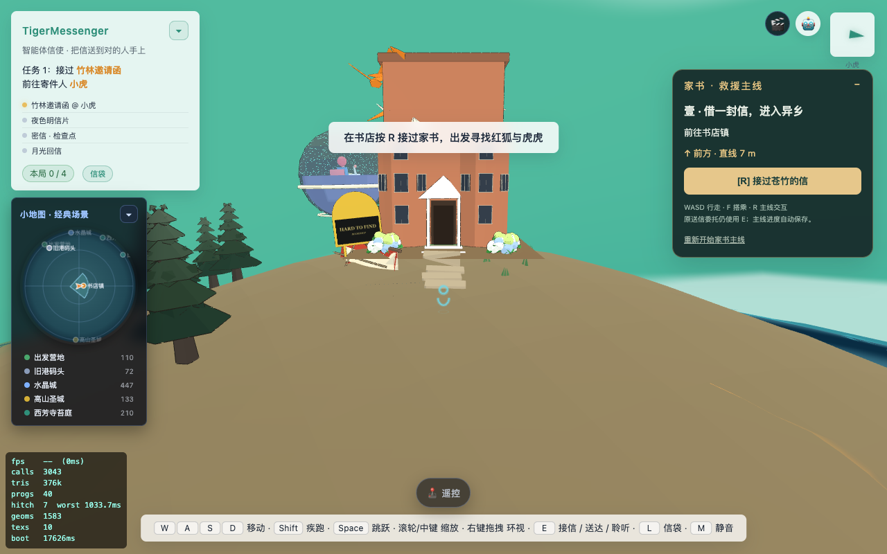

书店镇 · 门仍开着
潮退时，信使抵达书店镇。海堤托着红砖的 Hard To Find，三家工坊书店围住圆形广场。蝗虫还在修装卸架，蚂蚁捧着杯子，甲壳虫的车灯照着一箱没有封口的书。苍竹的信在门里等他，信封受了潮，边角像一片卷起的叶。
港口忽然响了警报。霸天舰队越过水面，运输艇的影子爬上坡道。第一轮炮火落在货轨边，工人把书箱拖进拱廊。信使想往海堤跑，却看见一个孩子站在广场中央：他丢了一本书，正回头找。
蝗虫先走出了自己的店。蚂蚁放下杯子，把沉重的身体挡在廊口；甲壳虫转动车灯，为钻进蒸汽的人们照路。三家店主没有关门。他们把读书的长桌让给伤员，把备件送到机器人脚边。Hard To Find 的店主递出那封信，又把信使往柱后推了一步。
“边境那封？”信使问。店主摇头：“先看看背面。”纸上是苍竹添的一行小字：若有人无处可去，让他先进门。信使把信收进衣襟，折回广场，牵住那个孩子。廊灯一盏接一盏亮着，像几家书店在彼此回答。
空降兵沿绳索落下，机器人与工人在广场边共同守住通路。吊车停住，货船留在码头，系泊飞艇也没有起飞：镇上所有能容人的地方，都在接人。蒸汽遮住了舰队，也遮住了守门者。信使不再数爆炸，只数从廊口跑过去的脚步。
等到炮声向海面退去，蚂蚁才去捡那只杯子。杯沿缺了一块。孩子从湿书里抽出一页，垫在杯下。信使沿货轨走向飞艇坞，边境还在潮气以外等信。他回头时，几家书店的门都开着。镇没有变得更坚固，只是没有让任何一个人独自留在门外。

书店镇 · 门仍开着
霸天舰队来袭之日
CartonBook · Edena